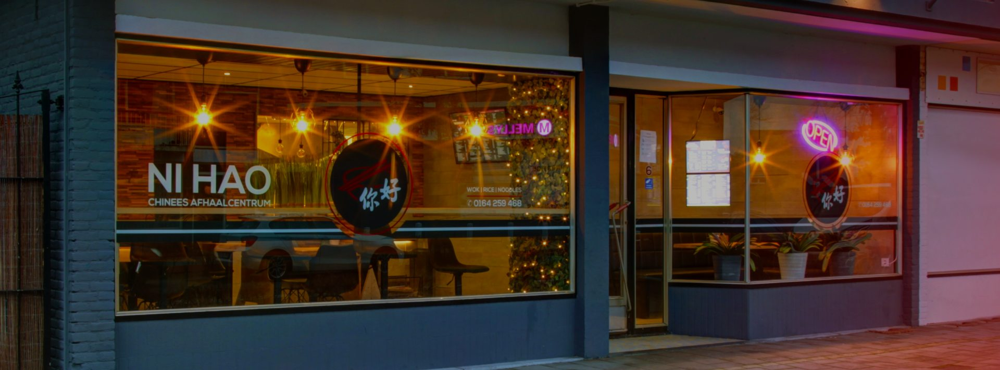
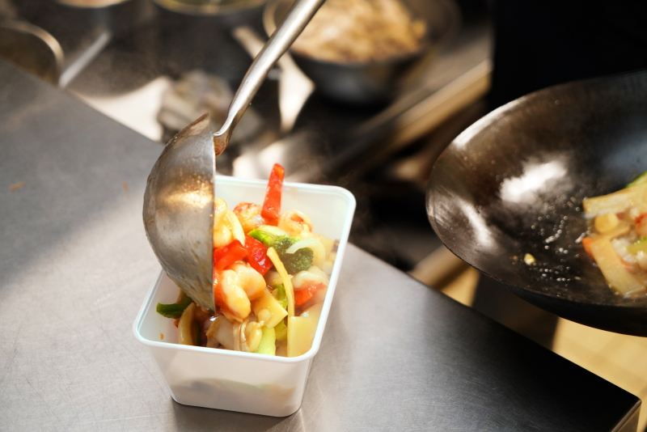
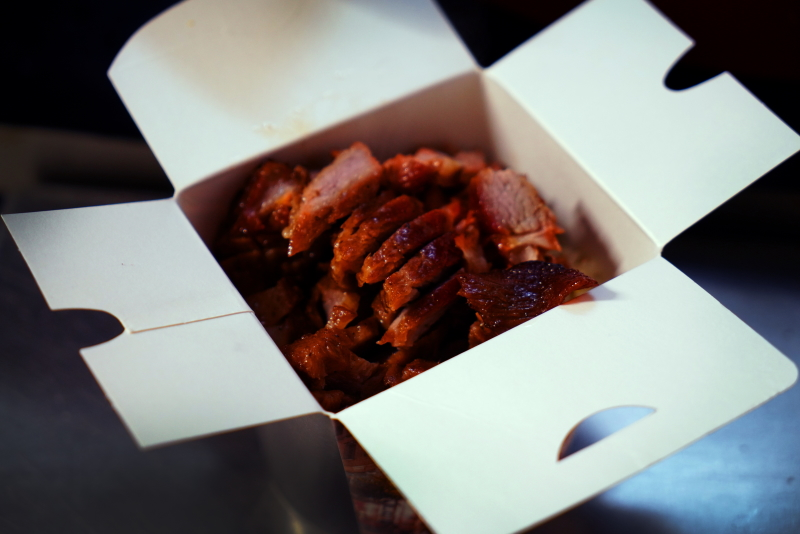
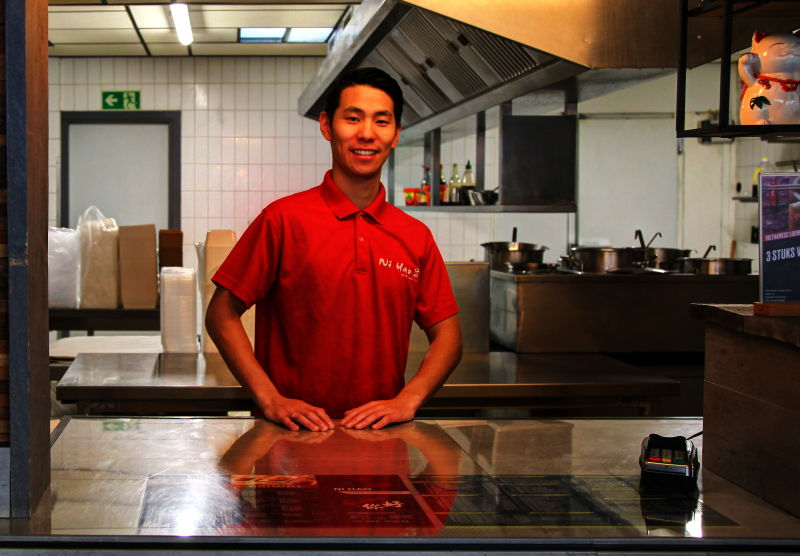
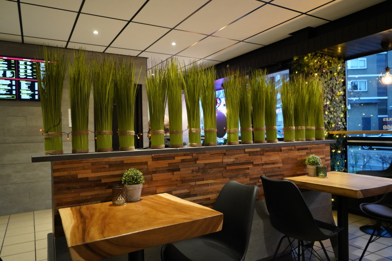
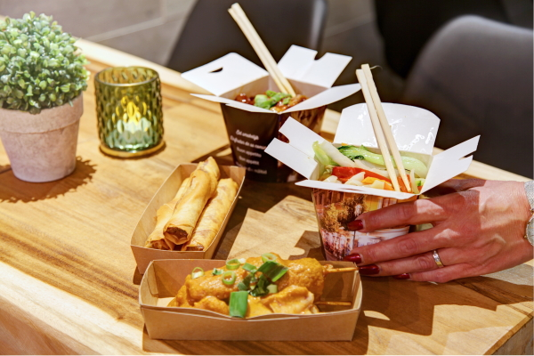
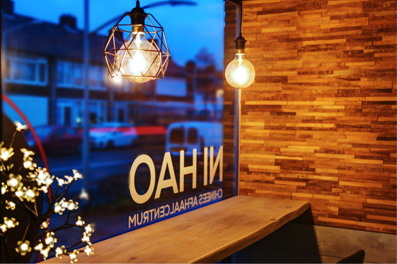
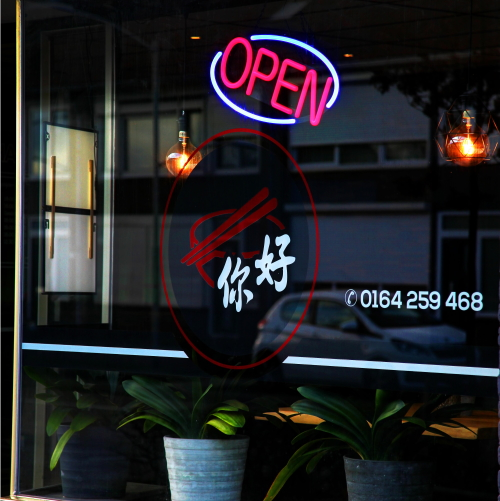
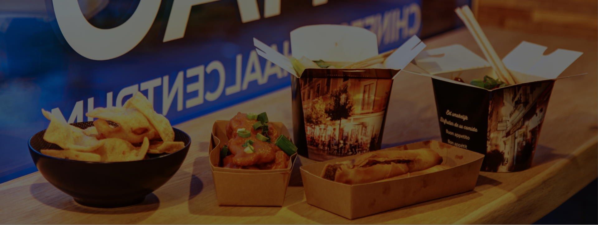

Tja sieuw
22,00
Geroosterd vlees met een barbecue-achtige smaak, een perfecte balans tussen zout en zoet. Met nasi, bami of witte rijst.

Pastoor Jutenlaan 6, Bergen op Zoom
Traditionele Chinees-Indische gerechten, met passie bereid in onze open keuken. Al meer dan 30 jaar.
Woensdag en donderdag gesloten. Bel voor de actuele tijden.
Kom binnen, bestel aan de balie en kijk mee hoe je tjap tjoy live in de wok wordt gemaakt.
Bel 0164 259 468, noem de nummers van de kaart en haal je bestelling alleen nog op.
In ons kleine restaurantgedeelte kun je ook terecht voor een snelle hap.
Een greep uit de kaart, vers uit de wok.

22,00
Geroosterd vlees met een barbecue-achtige smaak, een perfecte balans tussen zout en zoet. Met nasi, bami of witte rijst.
18,50
Gewokt: dun gesneden kipborstfilet met diverse groenten in chilisaus. Zoetzuur, met een pikant randje.
23,50
Gestoofd rundvlees in Indische kerriesaus. Scherp en licht pikant.
23,50
Gestoofd rundvlees in Indische tomatensaus, licht pikant door chilipepers, met een zoete tomatensmaak.
8,75
Voorgerecht: een knapperig, dun driehoekig deegpakketje gevuld met kip, met zoetzure saus.


Ni Hao bestaat al meer dan 30 jaar. Onze gerechten vinden hun oorsprong in Hongkong en Maleisië. Meekijken hoe de tjap tjoy live wordt gemaakt was en is nog steeds een hele beleving voor velen. Uiteraard speelt vertrouwen in de keuken daarbij ook een rol.
Sinds 2010 zijn wij als gezin de trotse eigenaren van Ni Hao. We willen meer bieden dan alleen traditioneel Chinees afhaal: gerechten die aansluiten bij onze klanten. Daarom horen we graag je mening en maken we graag een praatje.
Familie Chan




Een feestje, bedrijfsmeeting, lunch of diner, van babyshower tot jubileum of verjaardag: wij verzorgen het eten, voor 20 of voor 250 gasten. Kies zelf de gerechten of laat je verrassen.
Bestel minimaal drie dagen van tevoren. Vraag telefonisch of per mail een offerte aan.

"Alles is lekker maar de tomatensoep is overheerlijk, daar ben ik aan verslaafd."
"Beste en lekkerste Chinees van Bergen op Zoom en omstreken! Goed personeel altijd behulpzaam en denken goed mee (oa voor glutenvrije opties!) En een open keuken!"
"Vriendelijk personeel, smakelijke gerechten van zeer goede kwaliteit. Royale porties en goed warm."